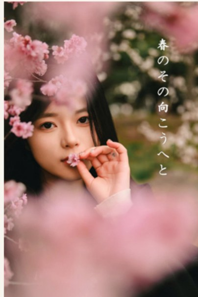
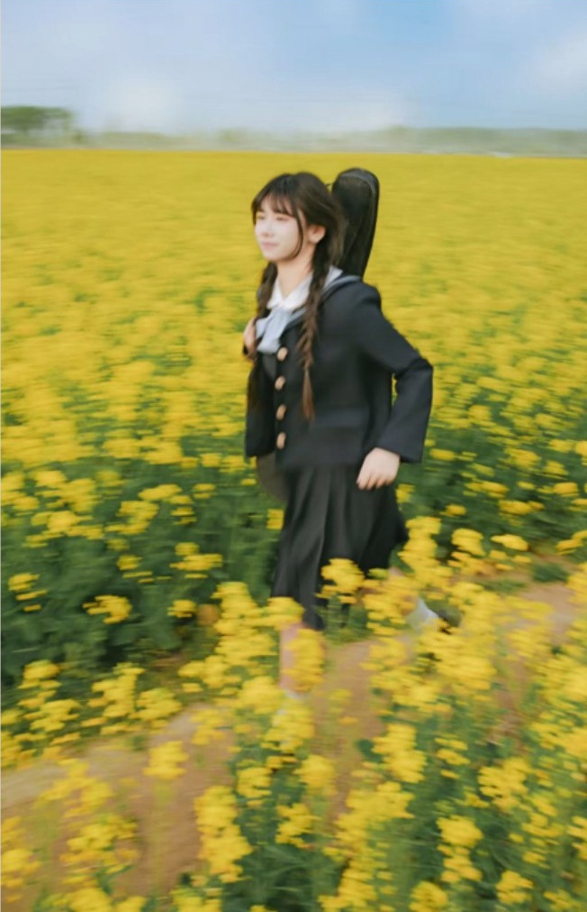
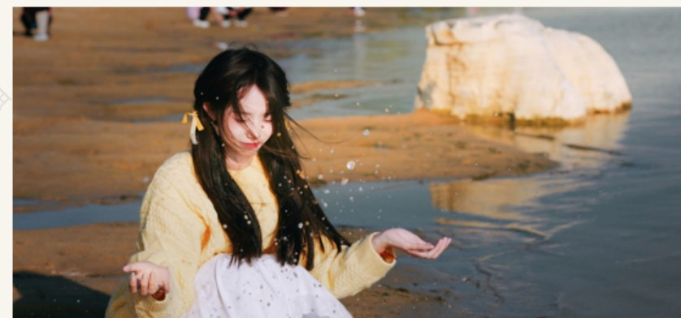
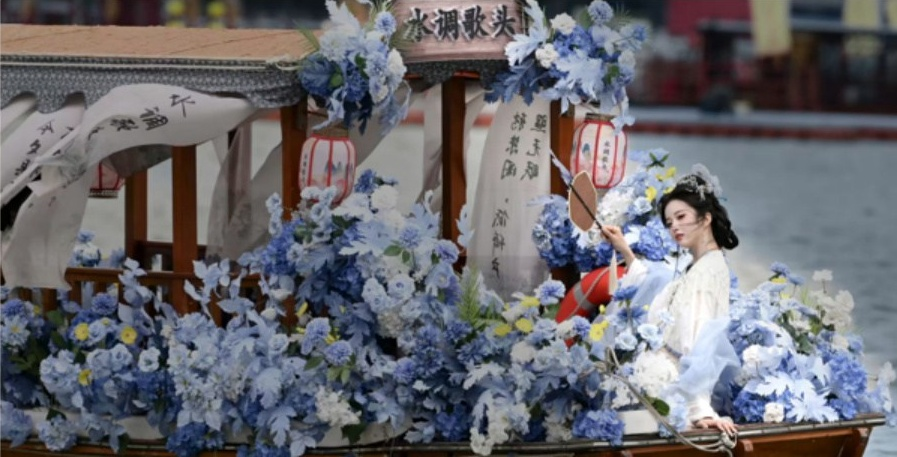
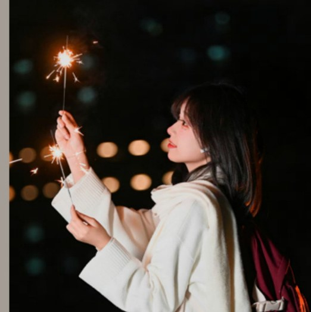

2024
春日花影




成片分组
拍摄流程
先看主光方向、暗部和背景层次。
用场景和道具，让人物有进入画面的理由。
通过走动、回头、看向物件，弱化僵硬感。

交付时控制色调、景别和节奏，形成完整组照。

明暗光效
竖幅照片保留完整构图，用亮度拨片呈现从烟火、窗光到低调棚拍的明暗过渡。画面不靠强裁切，人物、环境和光源关系可以同时被看见。



原稿选页
这里展示原摄影集里的精选页面，用原稿页直接呈现主题、色调和成片组织方式。

多场景收束
不同场景采用不同的光线处理：夜景保留环境亮点，季节外景控制前景和色调，棚拍突出轮廓，国风造型保持人物与复杂背景的关系。
拍摄前先看光线和场景，再确定人物状态；拍摄中用简单动作引导，减少摆拍感。
交付时按色调、景别和节奏选片修图，让一组照片能完整表达同一个主题。